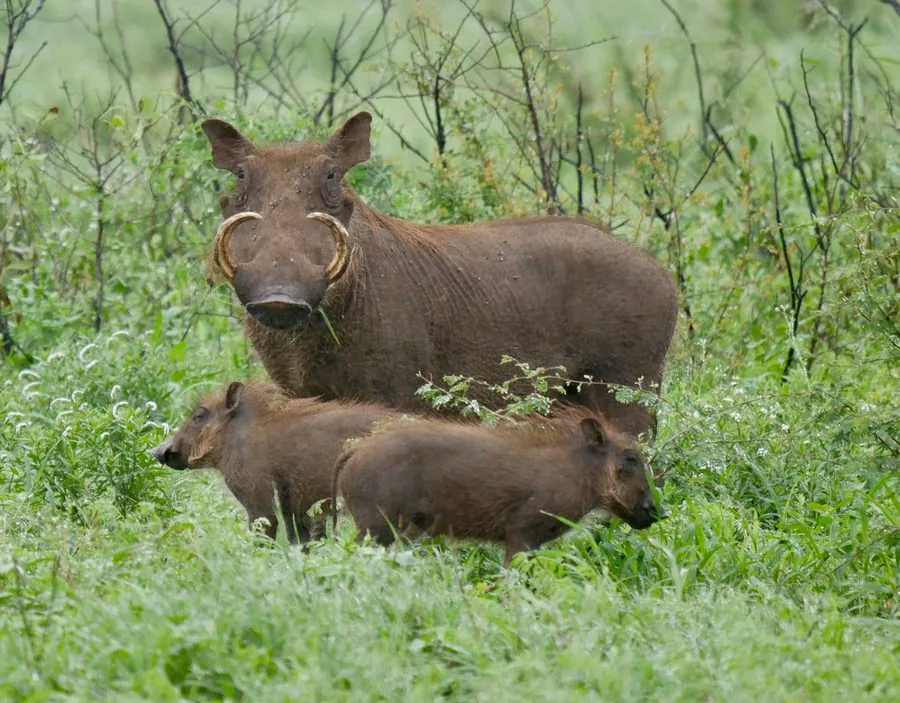

哺乳动物 · 动物界
疣猪 Phacochoerus africanus

非洲稀树草原上的野猪近亲，面部有肉质的突起和多颗疣，上獠牙弯曲，能倒退着钻进洞穴躲避天敌。
- 分类
- 门脊索动物门纲哺乳纲目偶蹄目科猪科属疣猪属
- 栖息环境
- 非洲稀树草原、疏林与灌丛，偏好靠近水源的开阔草地
- 地理分布
- 非洲撒哈拉以南，从埃塞俄比亚、肯尼亚到南非的草原
- 保护级别
- IUCN 无危（LC）
物种志
疣猪体长 1.0–1.5 米，尾长 0.35–0.5 米，体重 45–150 kg，雄性大于雌性。它的头部大而扁平，面部有两对肉质疣突，鼻吻部宽大；上獠牙向上弯曲，长约 15–25 cm，比下獠牙更突出；被毛稀薄呈灰褐色，背上有一条较长的鬃毛。
疣猪分布于非洲撒哈拉以南的稀树草原、疏林和灌丛，偏好开阔的草地和靠近水源的区域。它以草、根茎、块茎为食，也吃少量动物性食物，常用鼻子和獠牙拱土挖掘；白天活动，夜间躲入岩洞或其他动物废弃的洞穴。疣猪善跑，时速可达 50 km/h，遇到危险时会倒退着钻进洞穴，把獠牙朝外防御；它还会与獴类等动物共生，让它们清理身上的寄生虫。雌兽妊娠期约 170 天，每胎 2–4 仔。疣猪种群总体稳定，是狮子和豹的重要猎物。
形态与习性
- 食性草、根茎与块茎，也吃少量动物性食物
- 体长1.0–1.5 m，尾长 0.35–0.5 m
- 体重45–150 kg，雄性大于雌性
- 寿命野外约 15 年
- 繁殖妊娠期约 170 天，每胎 2–4 仔
- 獠牙上獠牙向上弯曲，长约 15–25 cm
- 速度奔跑时速可达 50 km/h
趣味知识
- 疣猪遇到危险时会倒退着钻进洞穴，把獠牙朝外防御。
- 面部肉质疣突是它的标志，雄猪的疣比雌猪更明显。
- 它常用鼻子和獠牙拱土，挖掘草根和块茎。
- 疣猪奔跑时速可达 50 km/h，是狮豹的常见猎物。